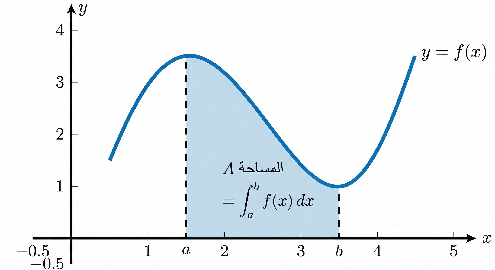
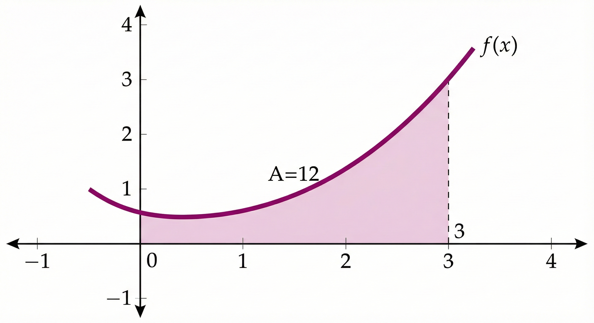
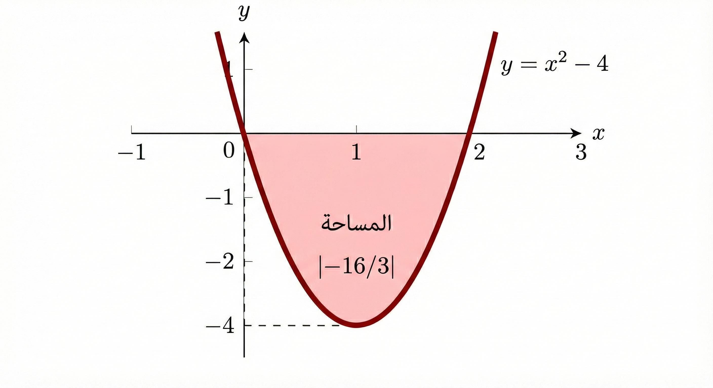
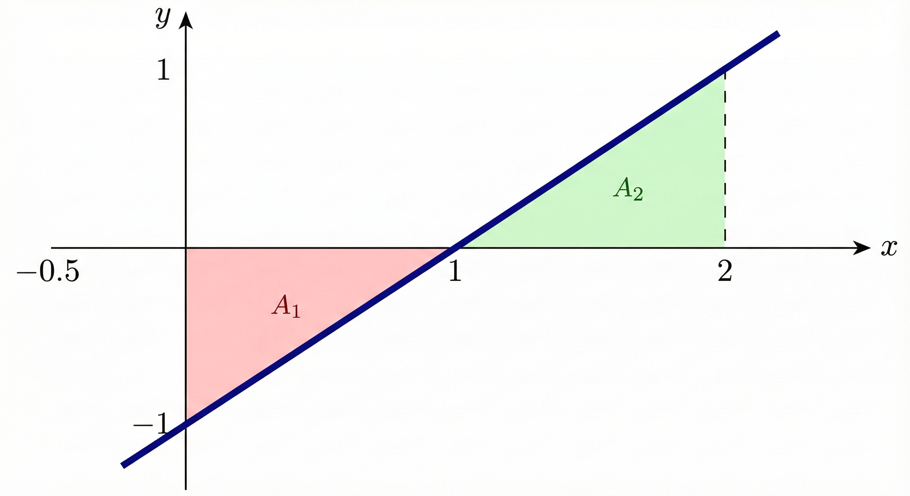

التكامل
تتمحور أهداف هذه الوحدة حول تمكين المتدرب من فهم مفهوم التكامل (عكس التفاضل) واكتساب المهارات اللازمة لحساب التكاملات المحدودة وغير المحدودة.
الهدف العام للوحدة:
تهدف هذه الوحدة إلى إتقان قواعد التكامل الأساسية وتطبيق النظرية الأساسية للتفاضل والتكامل في حساب المساحات
والتطبيقات الهندسية.
الأهداف التفصيلية:
من المتوقع في نهاية هذه الوحدة التدريبية أن يكون المتدرب قادراً وبكفاءة على أن:
- يفهم العلاقة العكسية بين التفاضل والتكامل ويحدد الدوال الأصلية.
- يطبق قواعد التكامل غير المحدود للدوال الجبرية والمثلثية والأسية.
- يطبق النظرية الأساسية للتفاضل والتكامل لحساب التكامل المحدود.
- يحسب المساحة تحت المنحنى باستخدام تطبيقات التكامل المحدود.
الوقت المتوقع للتدريب على هذه الوحدة: 14 ساعة تدريبية.
أهمية التكامل
يُعد التكامل الركيزة الثانية في علم التفاضل والتكامل، حيث يُستخدم كأداة رياضية فعالة لحساب المساحات للأشكال غير المنتظمة والحجوم المتولدة من الدوران. تكمن أهميته في تطبيقاته الواسعة في الفيزياء (مثل حساب المسافة من دالة السرعة)، والهندسة، والاقتصاد، وهو الأساس لحل المعادلات التفاضلية التي تصف العديد من الظواهر الطبيعية.
الفصل الأول: التكامل غير المحدود
الدوال الأصلية والتكامل غير المحدود
يقال إن \(F(x)\) دالة أصلية لدالة \(f(x)\) إذا كانت مشتقتها تساوي \(f(x)\)، أي: \[\frac{dF(x)}{dx} = f(x)\] التكامل غير المحدود للدالة \(f(x)\) هو مجموعة الدوال الأصلية لها: \[\int f(x) \, dx = F(x) + C\] حيث \(C\) هو ثابت التكامل.
السؤال: أوجد جميع الدوال الأصلية للدالة \(f(x) = 3x^2\).
الحل: بما أن عملية التفاضل هي: \[\frac{d}{dx}(x^3) = 3x^2\] فإن \(F(x) = x^3\) هي دالة أصلية للدالة \(f(x)\). إذن، التكامل غير المحدود هو: \[\int 3x^2 \, dx = x^3 + C\]
السؤال: أوجد جميع الدوال الأصلية للدالة \(g(x) = \cos x\).
الحل: بما أن مشتقة الجيب هي جيب التمام: \[\frac{d}{dx}(\sin x) = \cos x\] فإن \(G(x) = \sin x\) هي دالة أصلية للدالة \(g(x)\). إذن، التكامل غير المحدود هو: \[\int \cos x \, dx = \sin x + C\]
قوانين التكامل غير المحدود للدوال الجبرية
تكامل الصفر دائماً يساوي ثابتاً: \[\int 0 \, dx = C\]
1. الحالة العامة: بما أن مشتقة أي ثابت تساوي صفراً، فإن: \[\int 0 \, dx = C\]
2. بالنسبة لمتغير مختلف (\(t\)): \[\int 0 \, dt = C\]
تكامل الثابت \(a\) بالنسبة للمتغير \(x\): \[\int a \, dx = ax + C\]
1. تكامل عدد صحيح موجب: \[\int 7 \, dx = 7x + C\]
2. تكامل عدد كسري سالب: \[\int -\frac{1}{2} \, dx = -\frac{1}{2}x + C\]
3. تكامل ثابت رمزي (\(\pi\)): \[\int \pi^2 \, dx = \pi^2 x + C\]
لأي عدد حقيقي \(n \neq -1\): \[\int x^n \, dx = \frac{x^{n+1}}{n+1} + C\]
1. أس صحيح موجب: \[\int x^6 \, dx = \frac{x^{6+1}}{6+1} + C = \frac{x^7}{7} + C\]
2. أس كسري (جذر): \[\int \sqrt[3]{x} \, dx = \int x^{1/3} \, dx = \frac{x^{4/3}}{4/3} + C = \frac{3}{4}x^{4/3} + C\]
3. أس مضروب في ثابت: \[\int 5x^2 \, dx = 5 \cdot \frac{x^3}{3} + C = \frac{5}{3}x^3 + C\]
إذا كانت \(u\) دالة في \(x\) ومشتقها \(u'\)، ولأي \(n \neq -1\): \[\int u^n u' \, dx = \frac{u^{n+1}}{n+1} + C\]
1. دالة كثيرة حدود: حيث \(u = x^3-1\) ومشتقتها \(3x^2\): \[\int 3x^2 (x^3 - 1)^4 \, dx = \frac{(x^3 - 1)^5}{5} + C\]
2. دالة ذات أس سالب: حيث \(u = x^4+2\) ومشتقتها \(4x^3\): \[\int 4x^3 (x^4 + 2)^{-2} \, dx = \frac{(x^4 + 2)^{-1}}{-1} + C\]
3. دالة جذرية: \[\int 2x (x^2+3)^{1/2} \, dx = \frac{2}{3}(x^2+3)^{3/2} + C\]
تكامل دالة المقلوب \(\frac{1}{x}\) أو عندما يكون البسط مشتقة المقام: \[\int \frac{1}{x} \, dx = \ln|x| + C\] \[\int \frac{u'}{u} \, dx = \ln|u| + C\]
1. الحالة الأساسية: \[\int \frac{1}{x} \, dx = \ln|x| + C\]
2. البسط هو مشتقة المقام: \[\int \frac{2x+3}{x^2+3x+5} \, dx = \ln|x^2+3x+5| + C\]
3. دالة كسرية مع قوى: \[\int \frac{4x^3}{x^4 + 1} \, dx = \ln|x^4 + 1| + C\]
يتوزع التكامل على الجمع والطرح: \[\int [f(x) \pm g(x)] \, dx = \int f(x) \, dx \pm \int g(x) \, dx\]
1. كثيرات الحدود: \[\int (x^2 - 4x + 1) \, dx = \frac{x^3}{3} - 2x^2 + x + C\]
2. فرق بين حدين: \[\int (6x^5 - 2x^3) \, dx = x^6 - \frac{1}{2}x^4 + C\]
3. حدود مختلطة: \[\int (\sqrt{x} - x^{-2}) \, dx = \frac{2}{3}x^{3/2} + \frac{1}{x} + C\]
قواعد تكامل الدوال المثلثية
\[\int \cos u \cdot u' \, dx = \sin u + C\] \[\int \sin u \cdot u' \, dx = -\cos u + C\]
\(\int 3 \cos(3x) \, dx = \sin(3x) + C\)
\(\int 2x \cos(x^2) \, dx = \sin(x^2) + C\)
\(\int 4 \sin(4x) \, dx = -\cos(4x) + C\)
\[\int \sec^2 u \cdot u' \, dx = \tan u + C\] \[\int \csc^2 u \cdot u' \, dx = -\cot u + C\]
\(\int 3 \sec^2(3x) \, dx = \tan(3x) + C\)
\(\int 7 \csc^2(7x) \, dx = -\cot(7x) + C\)
\[\int \sec u \tan u \cdot u' \, dx = \sec u + C\] \[\int \csc u \cot u \cdot u' \, dx = -\csc u + C\]
قواعد تكامل الدوال الأسية
\[\int e^u \cdot u' \, dx = e^u + C\]
1. أس خطي: \[\int e^{9x} \, dx = \frac{1}{9} e^{9x} + C\]
2. أس غير خطي: \[\int x^2 e^{x^3} \, dx = \frac{1}{3} e^{x^3} + C\]
لأي أساس \(a > 0, a \neq 1\): \[\int a^u \cdot u' \, dx = \frac{a^u}{\ln a} + C\]
الفصل الثاني: التكامل المحدود والتطبيقات
التكامل المحدود والنظرية الأساسية
إذا كانت \(f(x)\) متصلة على الفترة \([a, b]\) و \(F(x)\) دالة أصلية لها، فإن: \[\int_a^b f(x) \, dx = F(b) - F(a)\]
التفسير الهندسي: يمثل قيمة المساحة المحصورة بين المنحنى ومحور \(x\) على الفترة \([a, b]\).

السؤال: أحسب \(I = \int_0^2 (x^2 + 1) \, dx\)
الحل:
- الدالة الأصلية: \(F(x) = \frac{x^3}{3} + x\)
- التعويض: \(F(2) - F(0) = (\frac{8}{3} + 2) - 0 = \frac{14}{3} \approx 4.67\)
السؤال: أحسب \(I = \int_1^4 \frac{1}{\sqrt{x}} \, dx\)
الحل:
- تحويل: \(x^{-1/2}\). الدالة الأصلية: \([2\sqrt{x}]_1^4\)
- التعويض: \(2\sqrt{4} - 2\sqrt{1} = 4 - 2 = 2\)
السؤال: أحسب \(I = \int_1^e \frac{2}{x} \, dx\)
الحل: \(= 2[\ln|x|]_1^e = 2(\ln e - \ln 1) = 2(1 - 0) = 2\)
السؤال: أحسب \(I = \int_0^{\pi/2} \sin(x) \, dx\)
الحل: \(= [-\cos x]_0^{\pi/2} = (-\cos(\pi/2)) - (-\cos 0) = 0 - (-1) = 1\)
تطبيقات التكامل في حساب المساحات
السؤال: أوجد المساحة تحت \(f(x) = x^2 + 1\) من \(x=0\) إلى \(x=3\).
الحل الجبري: بما أن \(f(x) > 0\): \[A = \int_0^3 (x^2 + 1) \, dx = \left[ \frac{x^3}{3} + x \right]_0^3 = (9 + 3) - 0 = 12 \text{ وحدة مربعة}\]

السؤال: أوجد المساحة المحصورة بين \(f(x) = x^2 - 4\) ومحور السينات على \([0, 2]\).
الحل: الدالة سالبة في الفترة \([0, 2]\). \[A = \left| \int_0^2 (x^2 - 4) \, dx \right| = \left| \left[ \frac{x^3}{3} - 4x \right]_0^2 \right| = \left| \frac{8}{3} - 8 \right| = \left| \frac{-16}{3} \right| = \frac{16}{3}\]

السؤال: أوجد المساحة لـ \(f(x) = x - 1\) على \([0, 2]\).
الحل: تقطع المحور عند \(x=1\). مساحة تحت المحور \([0,1]\) ومساحة فوقه \([1,2]\). \[A = |A_1| + A_2 = \left| \int_0^1 (x - 1) \, dx \right| + \int_1^2 (x - 1) \, dx = |-\frac{1}{2}| + \frac{1}{2} = 1\]

الاستخدام في التخصص
"التكامل هو عملية (التجميع). إذا كان التفاضل يجزئ الحركة، فالتكامل يجمع الأجزاء ليعطينا الصافي: الطاقة الكلية أو المساحة."
- التقنية الميكانيكية:
- يُستخدم التكامل لحساب الشغل الكلي المبذول بواسطة قوة متغيرة، وكذلك لتحديد مركز الثقل وعزم القصور الذاتي لقطع الغيار الميكانيكية غير المنتظمة.
- التقنية الكهربائية:
- تُحسب القيمة الفعالة (RMS) للتيار المتردد والجهد باستخدام التكامل لدالة الموجة، وهي القيمة الأساسية لحساب استهلاك الطاقة والأحمال في الشبكات.
- التقنية الإلكترونية:
- تُستخدم دوائر التكامل الإلكترونية لتحويل موجات المربع إلى موجات مثلثة، وتستخدم في تطبيقات توليد الإشارات والتحكم التناسبي التكاملي (PID) في الأتمتة.
- تقنية الاتصالات:
- يُستخدم التكامل لحساب الطاقة الكلية للإشارة خلال فترة زمنية محددة، مما يساعد في حساب نسبة الإشارة إلى الضجيج (SNR) وتقييم جودة قناة الاتصال.